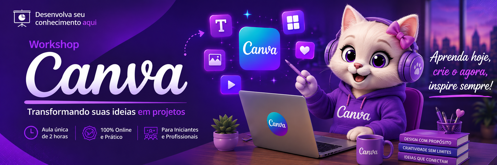

Nesta aula você conhecerá os conceitos fundamentais da Inteligência Artificial, entenderá como ela funciona, onde está presente no dia a dia e aprenderá a utilizar as principais ferramentas de IA de forma segura e produtiva.
Durante todo o curso utilizaremos algumas das principais ferramentas de Inteligência Artificial disponíveis atualmente.
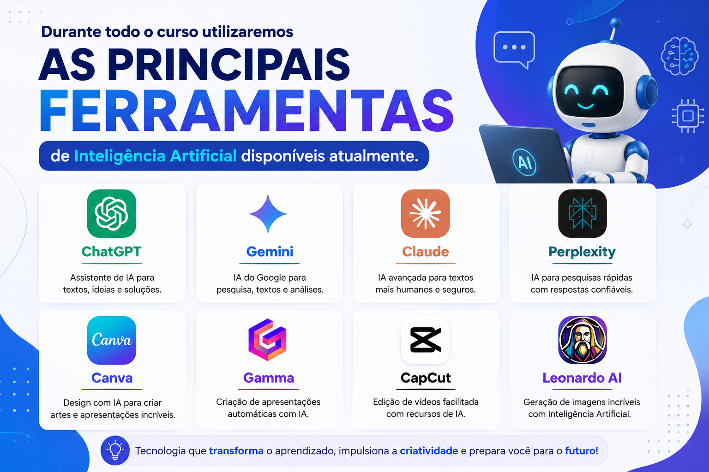
Cada ferramenta possui uma finalidade específica. Ao longo das próximas aulas aprenderemos quando utilizar cada uma delas.
A Inteligência Artificial (IA) é uma tecnologia capaz de analisar informações, reconhecer padrões e gerar respostas para diferentes tipos de problemas.
Ela pode responder perguntas, criar textos, gerar imagens, produzir apresentações, auxiliar em pesquisas, resumir documentos, traduzir idiomas e ajudar em inúmeras atividades do dia a dia.
É importante lembrar que a IA não pensa como um ser humano. Ela utiliza modelos matemáticos treinados com grandes quantidades de dados para prever a resposta mais adequada para cada situação.
Com suas próprias palavras, escreva o que você entendeu sobre Inteligência Artificial.
Muitas pessoas utilizam IA todos os dias sem perceber.
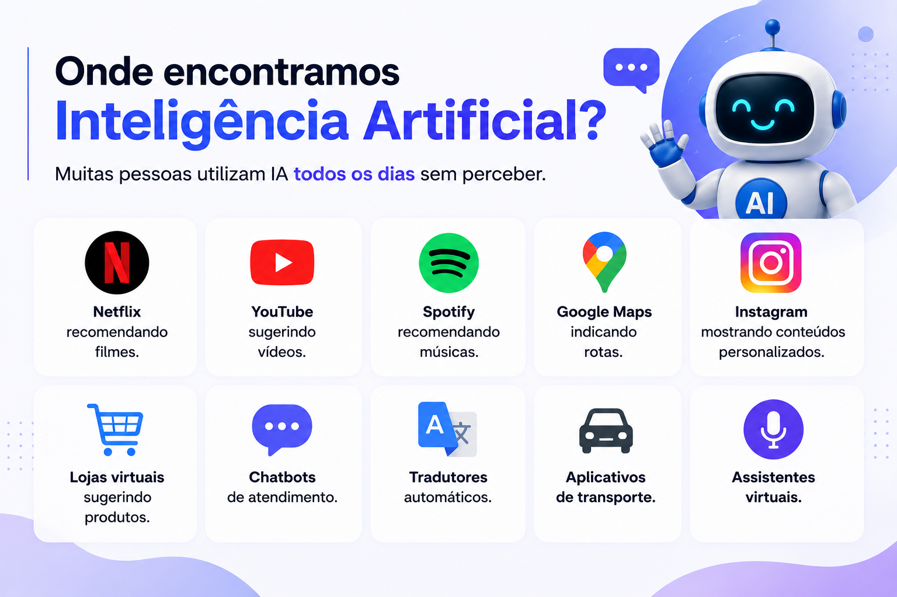
Observe seu dia a dia e escreva cinco situações em que você acredita utilizar Inteligência Artificial.
Acesse uma das ferramentas abaixo:
Faça a seguinte pergunta:
Leia a resposta e escreva abaixo o que mais chamou sua atenção.
A qualidade da resposta da IA depende diretamente da forma como a pergunta é feita. Quanto mais detalhes você fornecer, melhores tendem a ser os resultados.
Pense na IA como um assistente. Se você fizer um pedido muito curto, ela responderá de forma genérica. Se explicar exatamente o que deseja, a resposta será mais completa e personalizada.
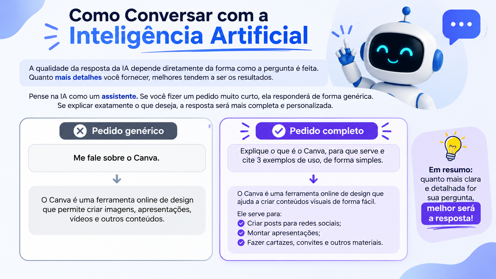
Pergunta simples:
Pergunta detalhada:
Compare as duas respostas e escreva qual ficou mais fácil de entender.
Prompt é o nome dado ao comando ou instrução enviada para a Inteligência Artificial.
Um bom prompt informa exatamente o que você deseja, para quem é o conteúdo e como a resposta deve ser apresentada.
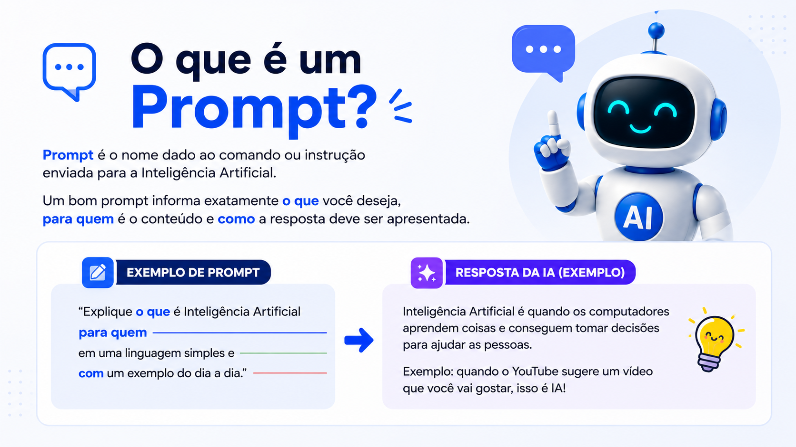
Exemplo:
Melhore os prompts abaixo para obter respostas mais completas.
Prompt simples:
Seu prompt melhorado:
Prompt simples:
Seu prompt melhorado:
Duas IAs diferentes podem responder à mesma pergunta de maneiras diferentes. Por isso, comparar respostas é uma excelente prática.
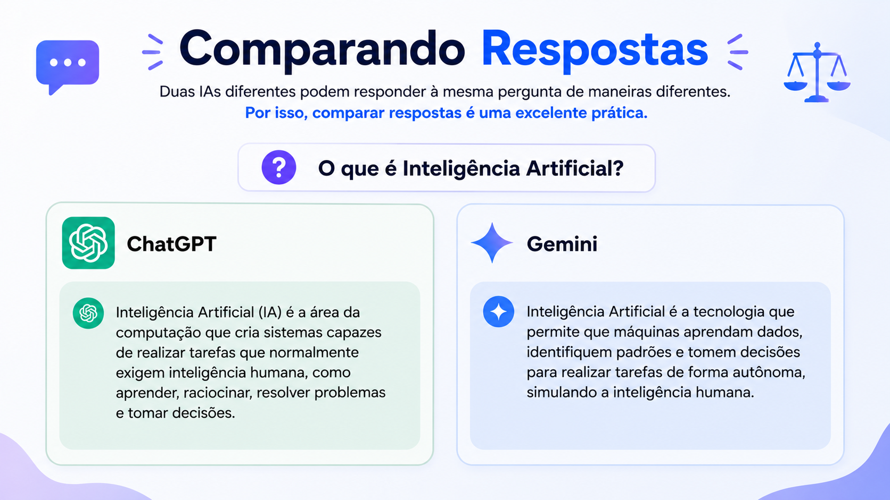
Faça a mesma pergunta para duas ferramentas diferentes (ChatGPT e Gemini, por exemplo).
Depois compare:
Crie um prompt para que a IA explique sua profissão (ou uma profissão que você deseja seguir).
Depois peça para a IA explicar:
Embora a Inteligência Artificial seja uma ferramenta muito útil, ela pode apresentar informações incorretas ou desatualizadas. Por isso, é importante desenvolver o hábito de conferir dados importantes.
Ao utilizar respostas da IA para trabalhos, pesquisas ou decisões profissionais, sempre consulte fontes confiáveis.
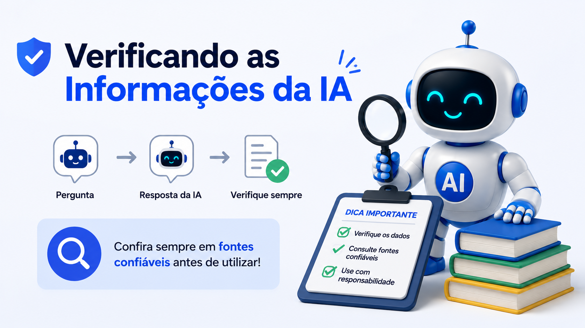
Pesquise a seguinte pergunta em uma IA e depois confirme a resposta em um site confiável.
As informações eram iguais? Escreva suas observações.
A IA deve ser utilizada como uma ferramenta de apoio, e não como substituta do pensamento humano.
Ela pode ajudar nos estudos, no trabalho e na organização das tarefas, mas as decisões finais devem sempre ser tomadas pelo usuário.
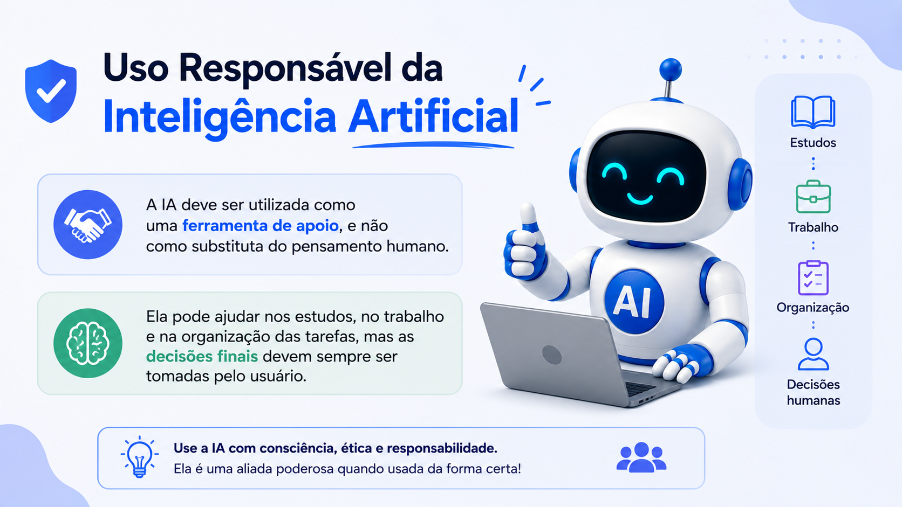
Na sua opinião, quais são os benefícios e os cuidados ao utilizar Inteligência Artificial?
Utilize uma IA para realizar as tarefas abaixo.
Qual atividade foi mais útil? Explique.
Escolha um problema do seu dia a dia e utilize a Inteligência Artificial para ajudar a resolvê-lo.
Exemplos:
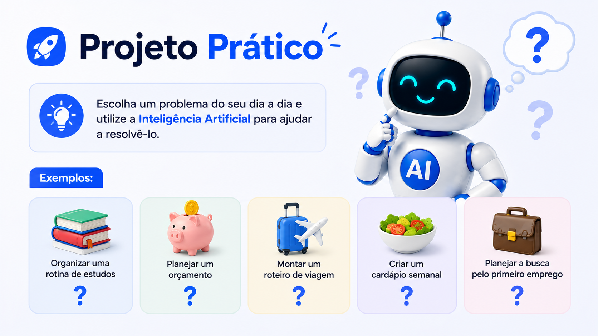
Descreva o problema e a solução apresentada pela IA.
Faça a mesma pergunta para duas ferramentas diferentes (por exemplo, ChatGPT e Gemini).
Compare as respostas e responda:
Parabéns! Agora você conhece os fundamentos da Inteligência Artificial.
Nesta aula você aprendeu:
Na próxima aula você aprenderá a utilizar a Inteligência Artificial para criar, melhorar e adaptar currículos profissionais para diferentes vagas de emprego.
Nesta aula você aprenderá a criar um currículo profissional utilizando Inteligência Artificial. Também descobrirá como destacar suas habilidades, organizar suas informações e aumentar suas chances de conseguir uma entrevista de emprego.
O currículo é um documento que apresenta suas informações pessoais, formação, experiências, cursos e habilidades profissionais.
Na maioria dos processos seletivos, ele é o primeiro contato entre o candidato e a empresa. Por isso, um currículo bem organizado aumenta as chances de ser chamado para uma entrevista.
Mesmo quem ainda não possui experiência profissional pode criar um excelente currículo destacando cursos, conhecimentos, projetos e objetivos profissionais.
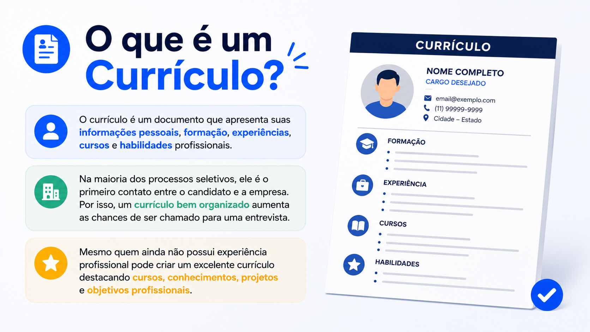
Na sua opinião, por que um currículo é importante para conseguir um emprego?
Um bom currículo deve ser organizado, objetivo e fácil de ler. As informações mais importantes precisam aparecer logo no início.
Normalmente ele possui os seguintes tópicos:
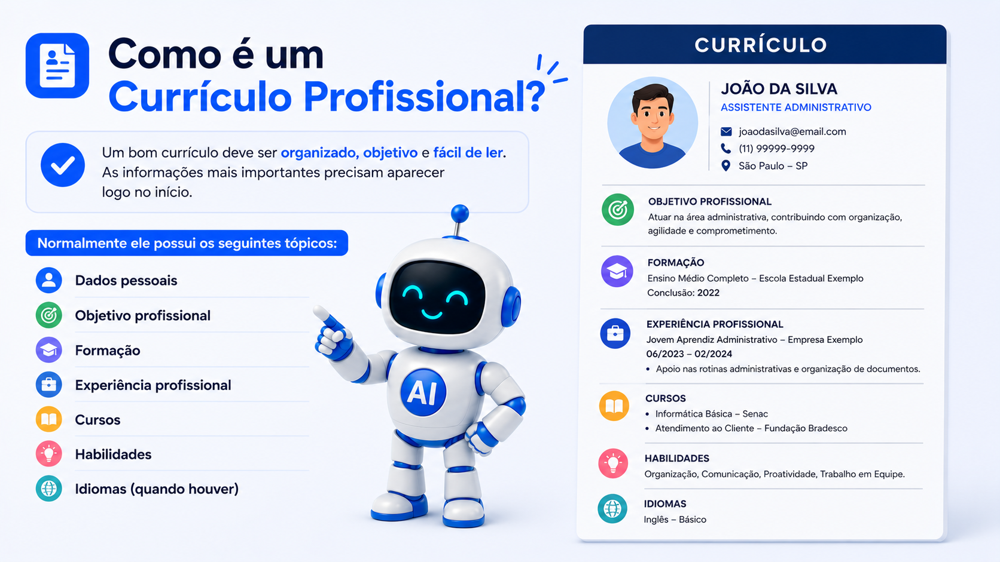
Observe um modelo simples de currículo profissional.
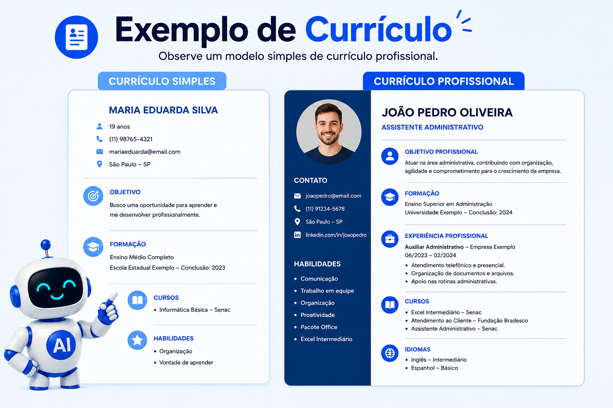
Perceba que todas as informações estão organizadas em uma sequência lógica, facilitando a leitura do recrutador.
Quais informações você acredita que já possui para montar seu currículo?
Antes de criar um currículo, também é importante conhecer os erros mais frequentes.
Evitar esses erros aumenta bastante a qualidade do seu currículo.
Pegue um currículo (seu ou de um exemplo da internet) e tente identificar quais dos erros acima estão presentes.
Anote suas observações abaixo.
Uma das maiores vantagens da Inteligência Artificial é ajudar na criação de currículos profissionais de forma rápida e organizada.
Ferramentas como ChatGPT e Gemini conseguem organizar suas informações, melhorar os textos e sugerir uma estrutura profissional.
Mesmo assim, é importante revisar todas as informações antes de enviar o currículo para uma empresa.
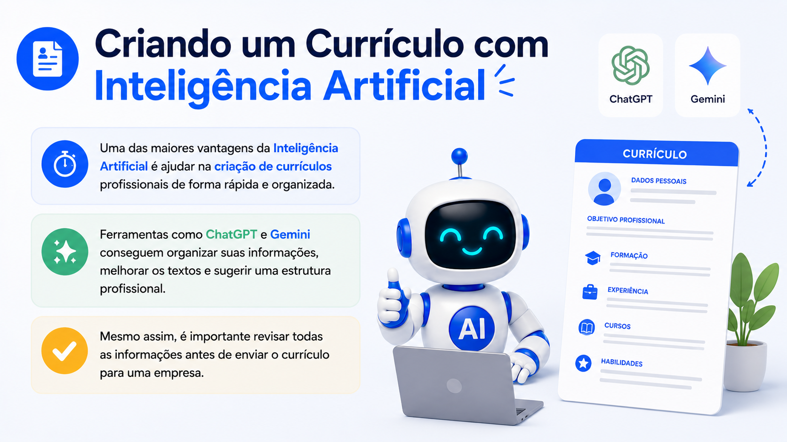
Quanto mais detalhes você fornecer para a IA, melhor será o resultado.
Informe sua idade, experiência, cursos, habilidades e o tipo de vaga desejada.
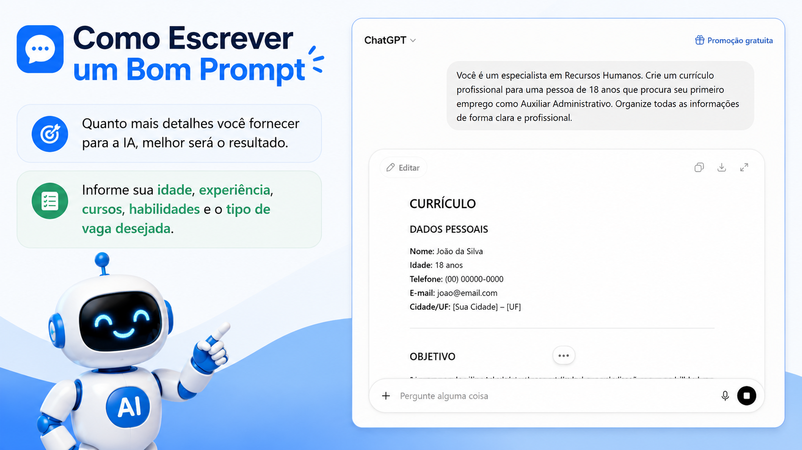
Exemplo de Prompt:
Adapte o prompt acima para a profissão que você deseja seguir.
Utilize a IA para criar currículos para diferentes vagas e observe como as informações mudam de acordo com cada profissão.
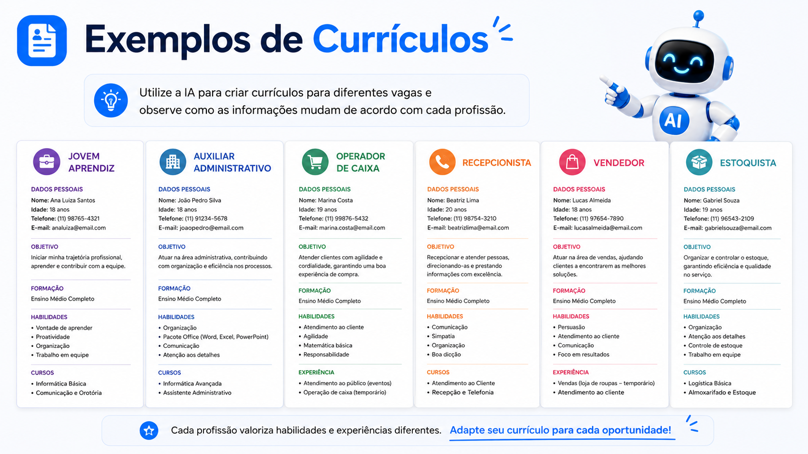
Escolha uma das profissões acima e peça para a IA criar um currículo completo.
Depois responda:
Agora crie o seu próprio currículo utilizando a IA.
Inclua as seguintes informações:
Após gerar o currículo, leia atentamente e anote abaixo os pontos que você gostaria de melhorar.
Peça para a IA analisar o currículo criado e responder às perguntas abaixo:
Depois de criar um currículo, o próximo passo é fazer uma revisão completa.
A Inteligência Artificial pode identificar erros de português, sugerir melhorias no texto e indicar informações que podem ser acrescentadas.
Quanto mais organizado estiver o currículo, maiores serão as chances de chamar a atenção do recrutador.
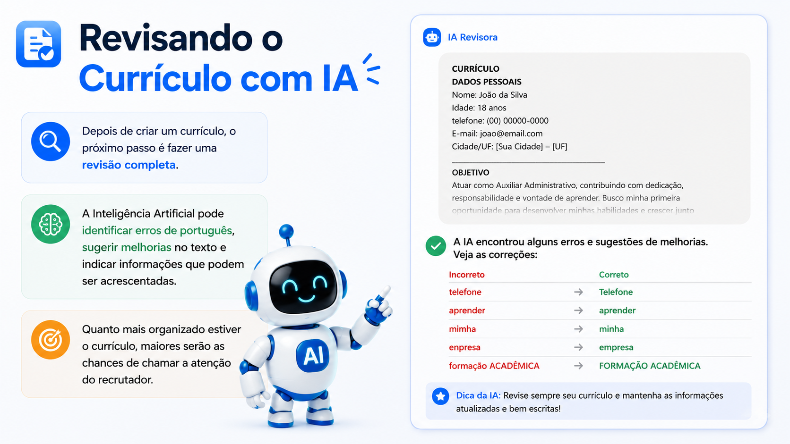
Copie o seu currículo e envie para a IA utilizando o prompt abaixo.
Escreva abaixo as principais melhorias sugeridas pela IA.
Um dos maiores benefícios da IA é adaptar um currículo para diferentes oportunidades de emprego.
O mesmo candidato pode ter versões diferentes do currículo dependendo da vaga desejada.
Por exemplo, um currículo para Auxiliar Administrativo pode destacar organização e informática, enquanto um currículo para Vendedor pode destacar comunicação e atendimento ao cliente.
Escolha uma vaga de emprego na internet e utilize a IA para adaptar seu currículo.
Qual vaga você escolheu?
Quais mudanças a IA fez no currículo?
Muitas empresas solicitam uma carta de apresentação junto com o currículo.
Nela, o candidato explica seu interesse pela vaga e destaca suas principais qualidades.
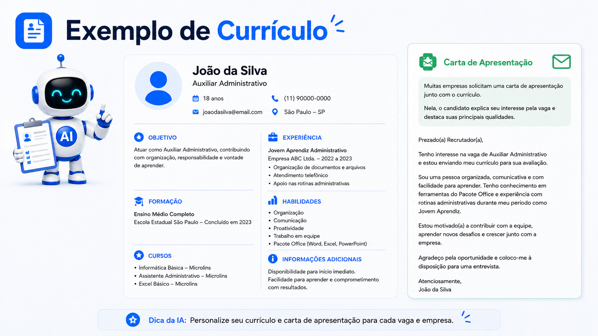
Prompt sugerido:
Utilize a IA para criar uma carta de apresentação para a profissão que você deseja seguir.
Ao enviar um currículo, também é importante escrever um e-mail claro e educado.
Uma boa mensagem demonstra profissionalismo e organização.
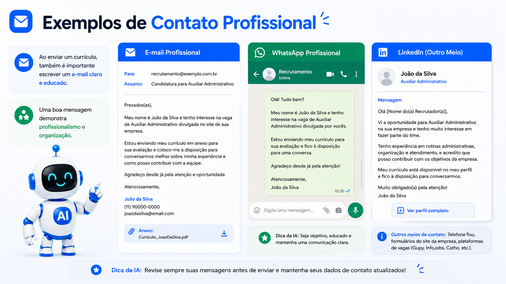
Exemplo de Prompt:
Crie seu próprio e-mail profissional utilizando a IA.
Agora reúna tudo o que foi desenvolvido durante esta aula.
Revise todos os documentos antes de finalizar.
Escolha uma vaga real de emprego em um site de recrutamento.
Depois utilize a IA para:
Escreva abaixo quais foram as principais recomendações dadas pela IA.
Parabéns! Você concluiu a Aula 2.
Nesta aula você aprendeu:
Na próxima aula você aprenderá a utilizar a Inteligência Artificial para treinar entrevistas de emprego, responder perguntas com mais confiança e aumentar suas chances de contratação.
Nesta aula você aprenderá como funciona uma entrevista de emprego, o que os recrutadores observam nos candidatos e como utilizar a Inteligência Artificial para treinar suas respostas e aumentar sua confiança.
A entrevista de emprego é uma conversa entre o candidato e o recrutador. Nesse momento, a empresa procura conhecer melhor a pessoa, suas habilidades, seus objetivos e verificar se ela possui o perfil adequado para a vaga.
Além das respostas, o recrutador também observa o comportamento, a comunicação, a educação e o interesse demonstrado durante a entrevista.
Quanto mais preparado estiver o candidato, maiores serão suas chances de conquistar a vaga.
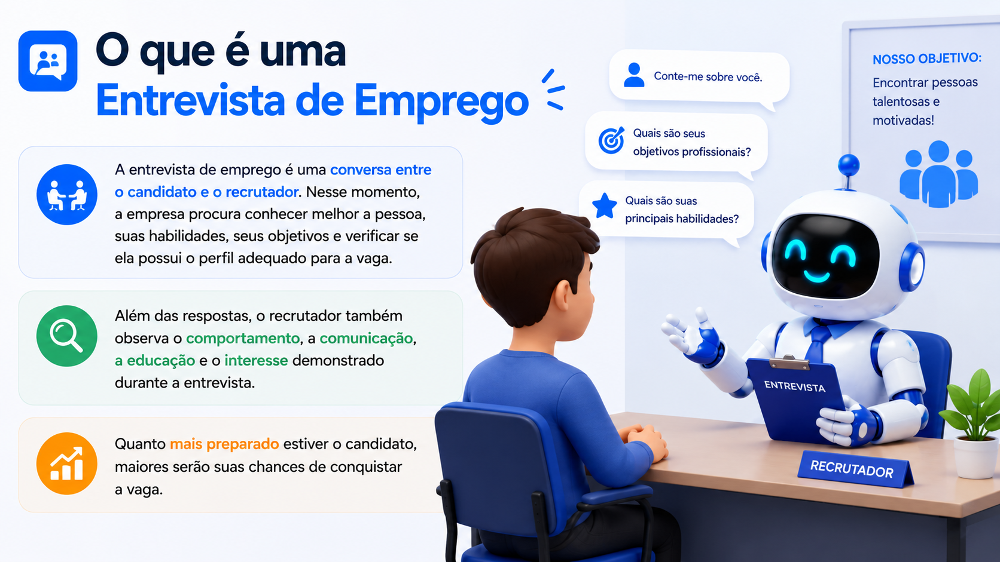
Você já participou de alguma entrevista de emprego? Como foi essa experiência?
Durante uma entrevista, o recrutador analisa muito mais do que apenas o currículo.
Ele procura identificar características importantes para o ambiente de trabalho.
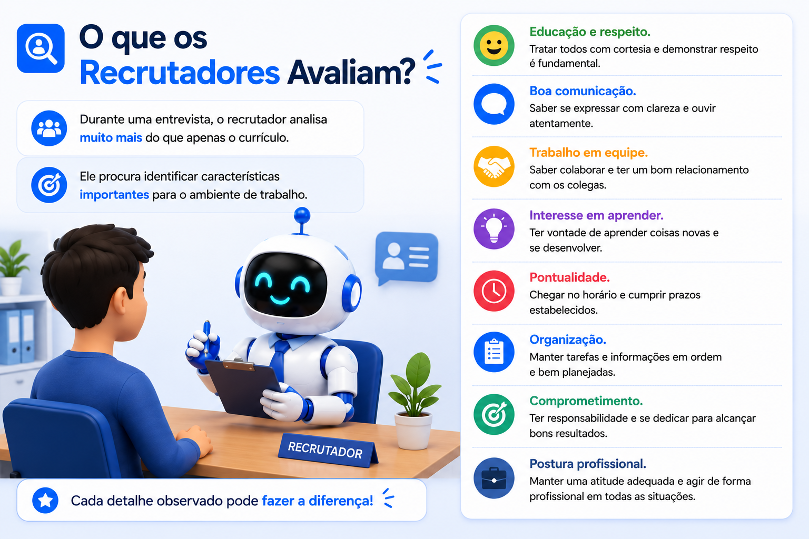
Na sua opinião, quais dessas características você já possui e quais ainda precisa desenvolver?
É normal sentir ansiedade antes de uma entrevista de emprego. O nervosismo faz parte desse momento, principalmente quando se trata da primeira oportunidade profissional.
Uma boa preparação ajuda a aumentar a confiança. Estudar sobre a empresa, praticar respostas e realizar simulações são formas eficientes de reduzir a insegurança.
Lembre-se de falar com calma, ouvir atentamente as perguntas e responder com sinceridade.
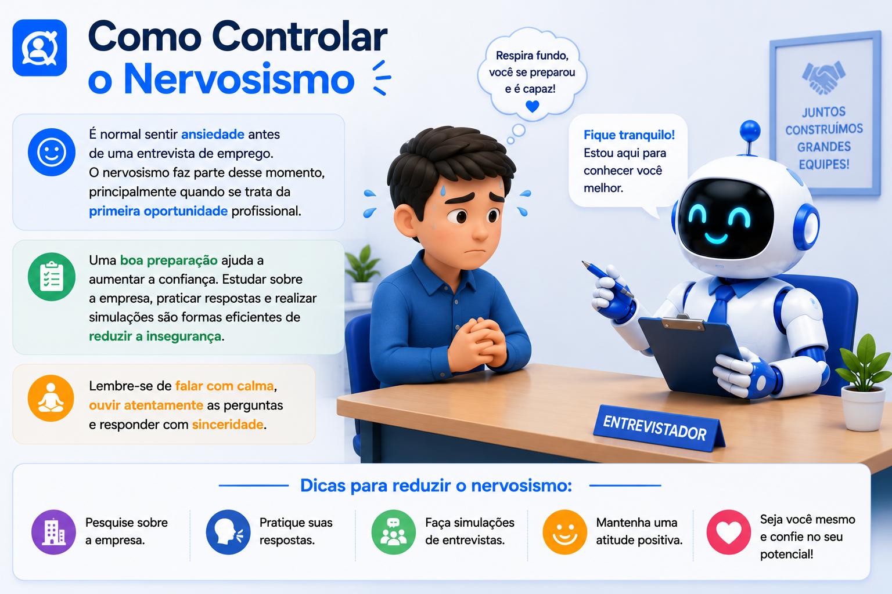
O que costuma deixar você mais nervoso ao falar com outras pessoas?
Escreva três atitudes que podem ajudar você a se sentir mais confiante durante uma entrevista.
Pesquise uma empresa onde você gostaria de trabalhar.
Depois responda:
Uma das formas mais eficientes de se preparar para uma entrevista é praticando antes do grande dia.
Ferramentas como ChatGPT e Gemini podem assumir o papel de um recrutador, fazendo perguntas semelhantes às utilizadas em processos seletivos reais.
Além de responder às perguntas, você pode pedir que a IA avalie seu desempenho e apresente sugestões de melhoria.
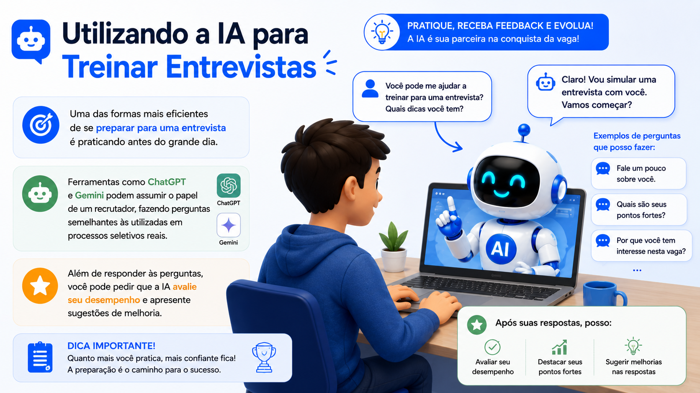
Quanto mais informações você fornecer, mais realista será a entrevista.
Informe a vaga desejada, seu nível de experiência e peça para a IA agir como um recrutador profissional.
Exemplo de Prompt:
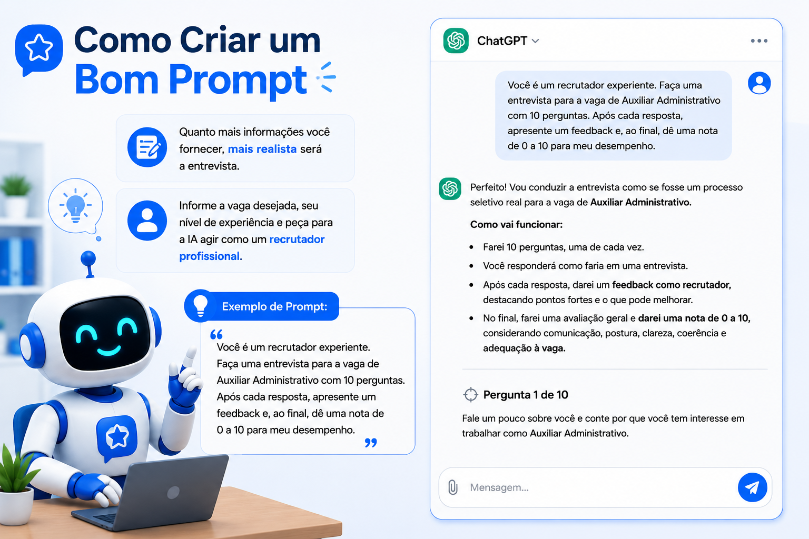
Adapte o prompt acima para a profissão que você deseja seguir.
Estas perguntas aparecem com frequência em entrevistas de emprego. Treine suas respostas utilizando a IA.
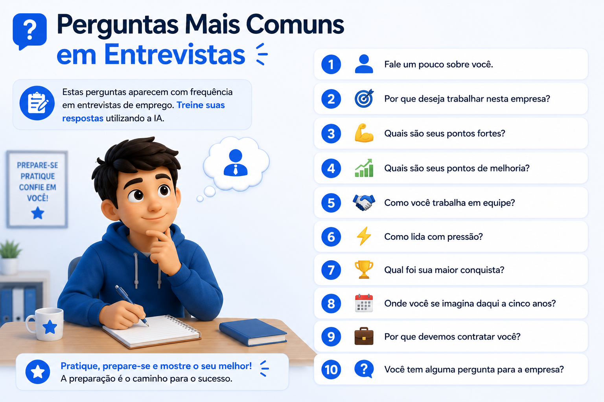
Escolha cinco perguntas da lista acima e responda utilizando a IA como entrevistador.
Depois registre abaixo quais perguntas foram mais difíceis de responder.
Realize uma entrevista completa utilizando ChatGPT ou Gemini para uma das vagas abaixo:
Após finalizar a entrevista, peça para a IA responder:
Além das respostas, a maneira como você se comporta durante a entrevista faz muita diferença.
Uma boa postura transmite segurança, organização e profissionalismo.
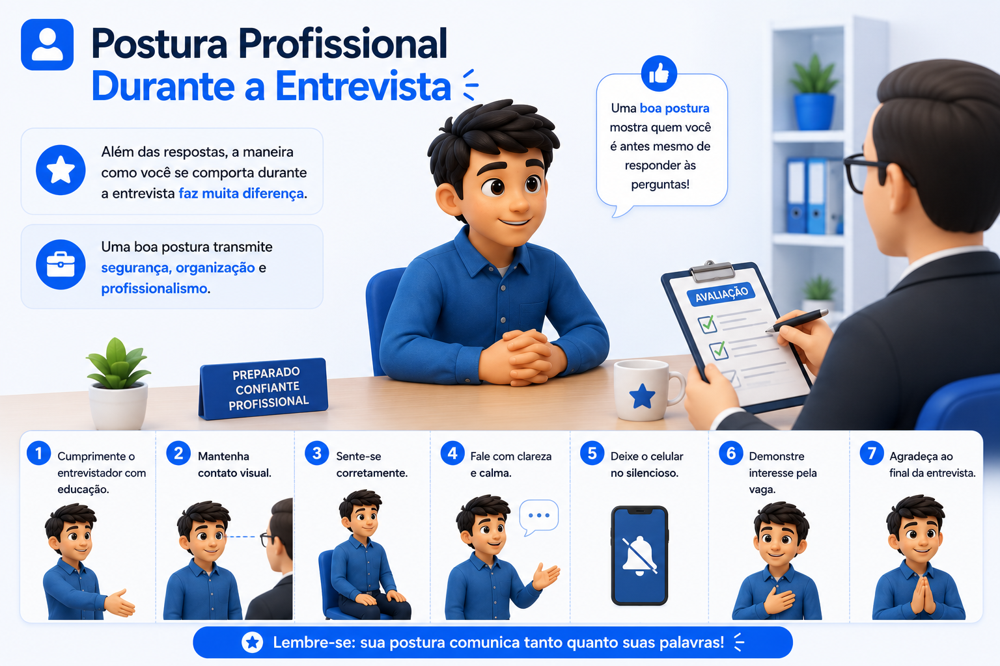
Na sua opinião, qual dessas atitudes é a mais importante durante uma entrevista? Explique o motivo.
Muitas empresas realizam entrevistas por vídeo utilizando plataformas como Google Meet, Microsoft Teams ou Zoom.
Antes da entrevista, faça alguns testes para evitar problemas.
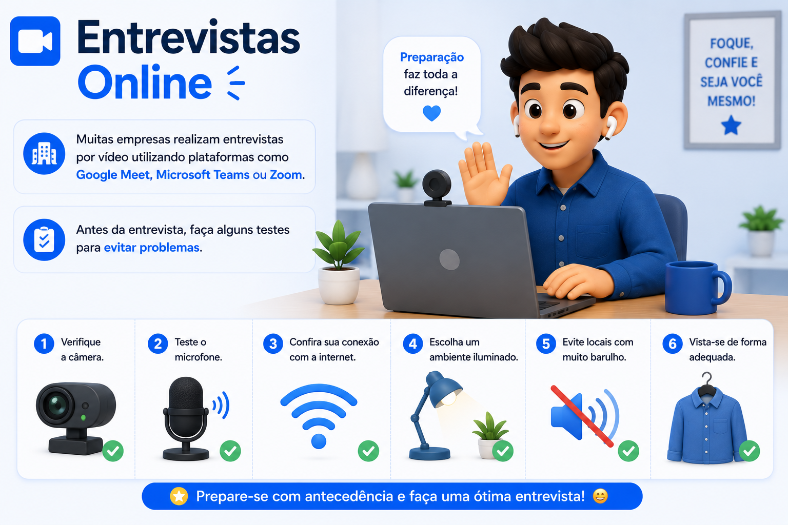
Faça uma lista com cinco cuidados que você terá antes de participar de uma entrevista online.
Agora coloque tudo em prática.
Escolha uma vaga de emprego real e utilize a Inteligência Artificial para realizar uma entrevista completa.
Ao terminar, peça para a IA responder:
Crie um plano de preparação para sua próxima entrevista de emprego.
Parabéns! Agora você sabe utilizar a Inteligência Artificial para treinar entrevistas, melhorar suas respostas e aumentar sua confiança em processos seletivos.
Na próxima aula você aprenderá a criar imagens, apresentações, vídeos e materiais profissionais utilizando ferramentas de Inteligência Artificial como Canva, Gamma, Leonardo AI e CapCut.
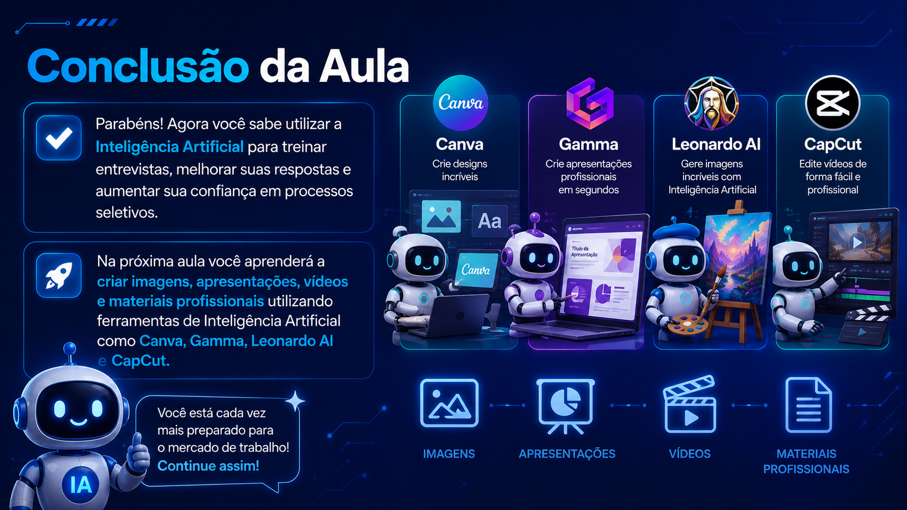
Nesta aula você aprenderá como utilizar ferramentas de Inteligência Artificial para criar imagens profissionais, apresentações automáticas e vídeos de forma rápida e prática.
Essas ferramentas são utilizadas por empresas, escolas, criadores de conteúdo e profissionais de diversas áreas para economizar tempo e aumentar a produtividade.
Hoje é possível criar imagens apenas descrevendo o que você deseja em um texto. Esse texto recebe o nome de prompt.
A Inteligência Artificial interpreta sua descrição e gera uma imagem baseada nas informações fornecidas.
Quanto mais detalhes você escrever, melhores tendem a ser os resultados.
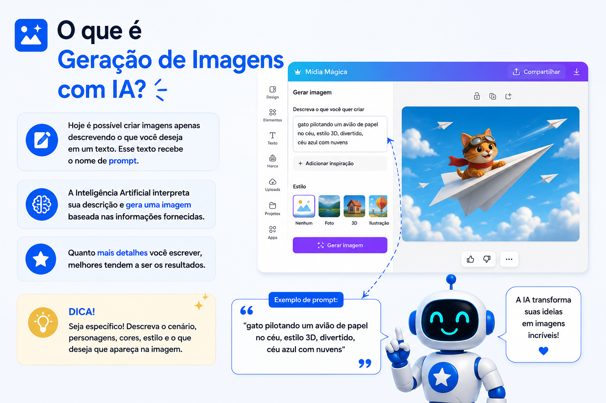
Na sua opinião, em quais situações uma empresa poderia utilizar imagens criadas por Inteligência Artificial?
Existem diversas plataformas capazes de gerar imagens utilizando IA. Algumas das mais conhecidas são:
Cada ferramenta possui estilos diferentes, mas todas funcionam através de comandos escritos pelo usuário.
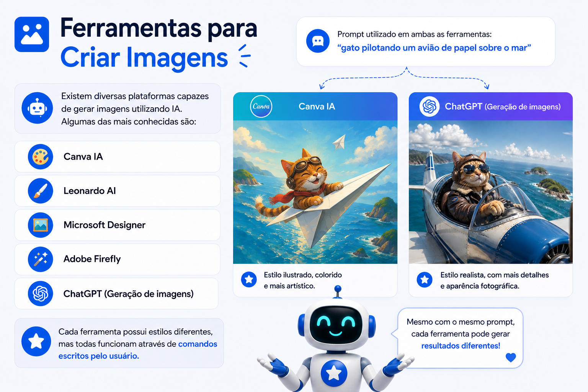
Um prompt é a descrição que você fornece para a IA.
Compare estes exemplos:
Prompt simples:
Prompt detalhado:
Perceba que o segundo exemplo fornece muito mais detalhes para a Inteligência Artificial.
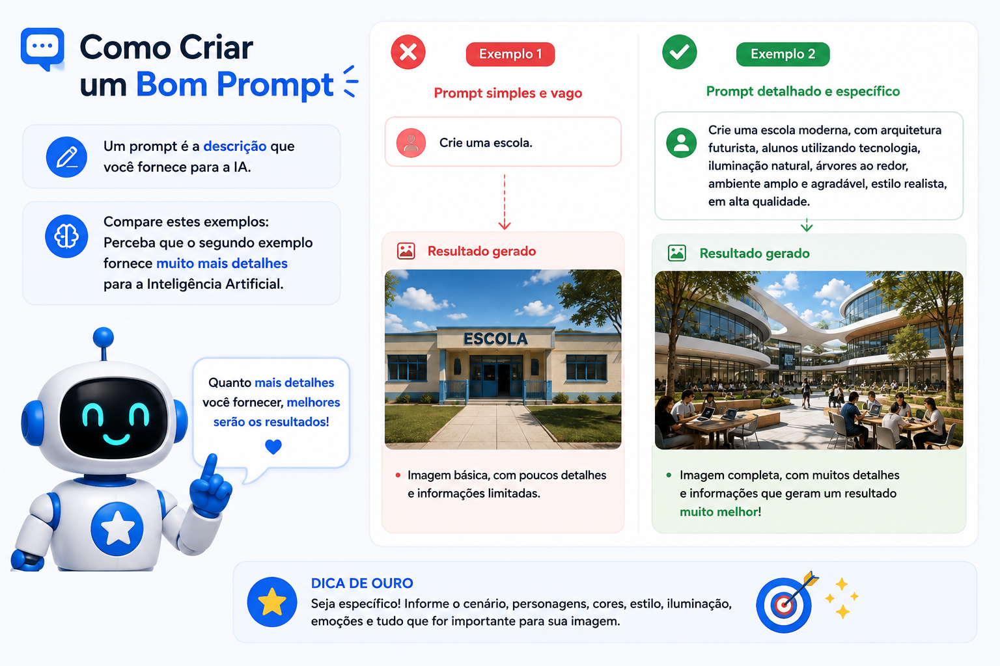
Escreva um prompt para criar uma imagem relacionada à profissão que você deseja seguir.
Utilizando Canva IA ou Leonardo AI, crie três imagens diferentes:
Depois compare os resultados e responda:
Além de criar imagens, a Inteligência Artificial também consegue desenvolver apresentações completas em poucos minutos.
Ferramentas como Canva e Gamma geram automaticamente títulos, textos, imagens e organizam os slides de maneira profissional.
Depois da criação automática, você pode editar todo o conteúdo conforme sua necessidade.
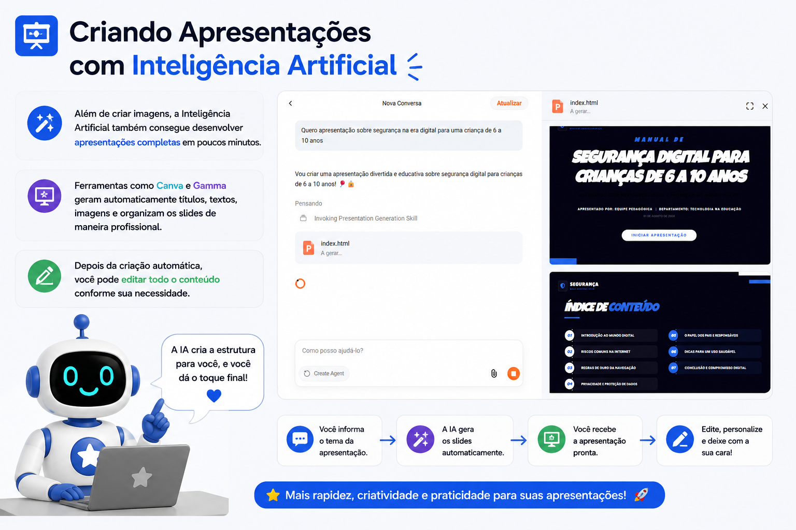
Uma boa prática é utilizar o ChatGPT para criar o conteúdo e o Canva ou Gamma para montar automaticamente o visual da apresentação.
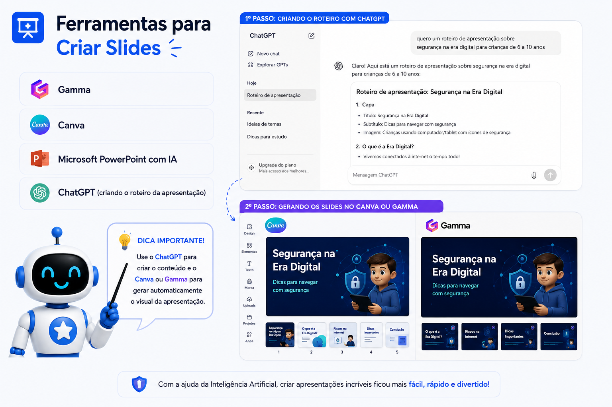
Pense em um tema que você gostaria de apresentar.
Escreva abaixo esse tema.
Agora peça para a IA criar um roteiro com 10 slides sobre esse assunto.
Copie alguns exemplos e teste na ferramenta de sua preferência.
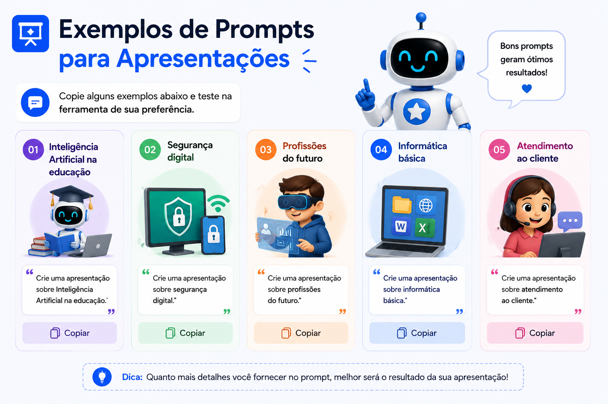
Utilizando o Canva ou Gamma:
Quais recursos da IA facilitaram a criação da apresentação?
A Inteligência Artificial também facilita a criação de vídeos para divulgar produtos, empresas, cursos, eventos e conteúdos para redes sociais.
Ferramentas como o CapCut possuem recursos de IA que ajudam a gerar legendas automáticas, narrações, efeitos, músicas e até sugestões de edição.
Você também pode utilizar o ChatGPT para criar o roteiro do vídeo antes de iniciar a edição.
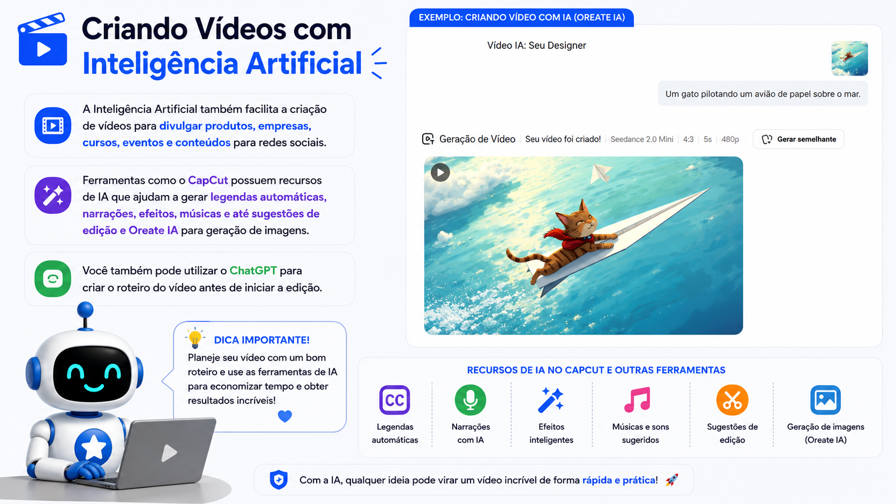
Antes de produzir um vídeo, é importante organizar as ideias.
Um bom roteiro ajuda a manter o conteúdo organizado e facilita a gravação.
Exemplo de Prompt:
Você pode adaptar esse modelo para qualquer produto, serviço ou evento.
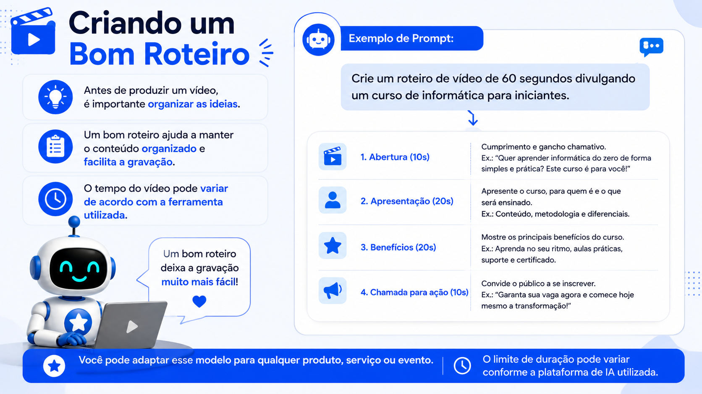
Escolha um dos temas abaixo e peça para a IA criar um roteiro de vídeo.
Utilizando ChatGPT e CapCut, produza um vídeo curto com até 1 minuto.
Seu vídeo deverá conter:
Agora é o momento de utilizar tudo o que você aprendeu durante o curso.
Escolha um tema e desenvolva um pequeno projeto utilizando Inteligência Artificial.
Seu projeto deverá conter:
Ao finalizar, apresente seu projeto para a turma ou para o professor.
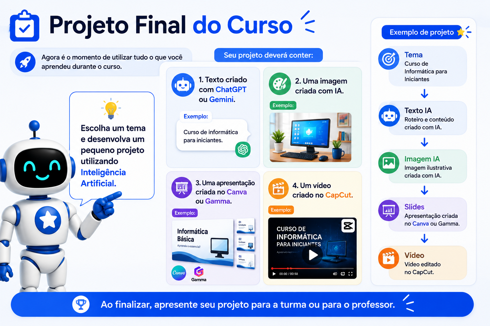
Parabéns! Você concluiu o Curso de Inteligência Artificial para Empregabilidade.
Ao longo das quatro aulas você aprendeu a utilizar a IA para estudar, criar currículos, se preparar para entrevistas e produzir conteúdos profissionais utilizando imagens, apresentações e vídeos.
Continue praticando e explorando novas ferramentas. A Inteligência Artificial está presente em diversas profissões e pode ser uma grande aliada para aumentar sua produtividade e criar novas oportunidades.
Aprender a utilizar o Microsoft Word, conhecer a interface, criar documentos, salvar arquivos e realizar formatações básicas.
O Microsoft Word é um dos programas mais utilizados no mundo para criação de documentos. Empresas, escolas, universidades e órgãos públicos utilizam o Word para criar relatórios, contratos, currículos, cartas e diversos outros documentos.
Ao abrir o Word encontramos a Faixa de Opções, onde estão organizadas as ferramentas principais. Cada guia possui funções específicas para edição e formatação.
Os documentos criados no Word são compostos por textos, imagens, tabelas e outros elementos que podem ser organizados profissionalmente.
Criar um documento profissional contendo nome, idade, objetivos profissionais e um texto de apresentação.
Uma boa formatação torna o documento mais agradável e profissional. Empresas valorizam documentos organizados e visualmente limpos.
O Word permite controlar margens, espaçamento, alinhamento e estilos de texto.
Criar um relatório profissional de uma página.
Documentos modernos utilizam tabelas, imagens e gráficos para facilitar a compreensão das informações.
O Word possui ferramentas que permitem inserir e organizar esses elementos de forma profissional.
Criar um folder informativo utilizando tabelas e imagens.
O Word é amplamente utilizado para criar currículos, contratos, propostas comerciais e relatórios profissionais.
Um currículo bem estruturado aumenta as chances de ser notado pelos recrutadores.
Criar um currículo completo, profissional e pronto para envio.
Aprender a utilizar a interface do Excel, criar planilhas simples e compreender como organizar informações em linhas e colunas.
O Microsoft Excel é um dos programas mais utilizados no mercado de trabalho para organização de dados, cálculos e relatórios. Empresas utilizam Excel para controlar estoque, vendas, clientes, finanças e produtividade.
Uma planilha é formada por linhas e colunas. O encontro entre uma linha e uma coluna forma uma célula. Cada célula possui um endereço único, como A1, B5 ou C10.
O Excel permite armazenar informações e realizar cálculos automáticos, economizando tempo e reduzindo erros.
Montar uma planilha com 20 produtos contendo nome, quantidade e valor.
Criar uma planilha completa de cadastro de alunos.
As fórmulas são o principal recurso do Excel. Elas permitem realizar cálculos automaticamente, economizando tempo e aumentando a precisão.
Uma fórmula sempre começa com o sinal de igual (=).
Criar uma planilha de notas de alunos e calcular médias.
Criar uma planilha de vendas e calcular total vendido.
Calcular descontos utilizando porcentagem.
Criar uma planilha de folha de pagamento com cálculos automáticos.
O Excel é amplamente utilizado para organizar informações financeiras. Além dos cálculos, é possível criar gráficos para facilitar a visualização dos resultados.
Criar uma planilha financeira completa com gráficos.
Montar um fluxo de caixa simples para uma pequena empresa.
O Excel é uma das habilidades mais solicitadas pelas empresas. Profissionais que dominam planilhas possuem vantagem em processos seletivos.
Conhecimentos em Excel são exigidos em áreas administrativas, financeiras, comerciais e logísticas.
Criar uma planilha profissional completa contendo cadastro, cálculos, gráficos e indicadores.
Aprender a utilizar a interface do PowerPoint, criar apresentações e compreender os elementos básicos de um slide profissional.
O Microsoft PowerPoint é um software utilizado para criar apresentações visuais. Empresas, escolas e universidades utilizam apresentações para transmitir informações de forma organizada e profissional.
Uma apresentação é composta por slides. Cada slide pode conter textos, imagens, gráficos, vídeos, ícones e animações.
Uma boa apresentação deve ser simples, objetiva e visualmente agradável. O excesso de texto pode dificultar a compreensão do público.
Montar uma apresentação de 8 slides apresentando sua trajetória pessoal.
Criar uma apresentação profissional de apresentação pessoal para entrevista de emprego.
Um bom slide não depende apenas do conteúdo. O design influencia diretamente na atenção e compreensão do público.
É importante utilizar cores harmoniosas, fontes legíveis e imagens de qualidade.
Slides profissionais normalmente possuem pouco texto e utilizam recursos visuais para transmitir informações.
Criar uma apresentação de 10 slides sobre uma empresa fictícia.
Transformar um slide simples em um slide profissional utilizando imagens, ícones e organização visual.
As animações e transições ajudam a tornar a apresentação mais dinâmica. Porém, quando utilizadas em excesso, podem distrair o público.
O objetivo principal é destacar informações importantes sem comprometer a clareza da apresentação.
Além dos slides, a forma de apresentação do conteúdo também é essencial para transmitir confiança e profissionalismo.
Apresentar uma apresentação de 5 minutos para a turma.
Construir uma apresentação profissional utilizando animações de forma equilibrada.
Muitas empresas utilizam apresentações para reuniões, treinamentos, vendas e divulgação de projetos.
Dominar o PowerPoint é uma habilidade valorizada em diversas áreas profissionais.
Apresentações profissionais demonstram organização, criatividade e capacidade de comunicação.
Desenvolver uma apresentação profissional completa contendo capa, objetivos, conteúdo, imagens, gráficos e conclusão.
Apresentar um projeto profissional completo utilizando todas as técnicas aprendidas durante o curso.
Olá, pequeno explorador da tecnologia! 🚀
Hoje vamos iniciar nossa primeira missão e descobrir um dos equipamentos mais importantes do mundo: o computador.
Você aprenderá a identificar as principais peças do computador e entender para que cada uma delas serve.
Ao final da missão, você será capaz de reconhecer um computador completo e explicar suas partes para outras pessoas.
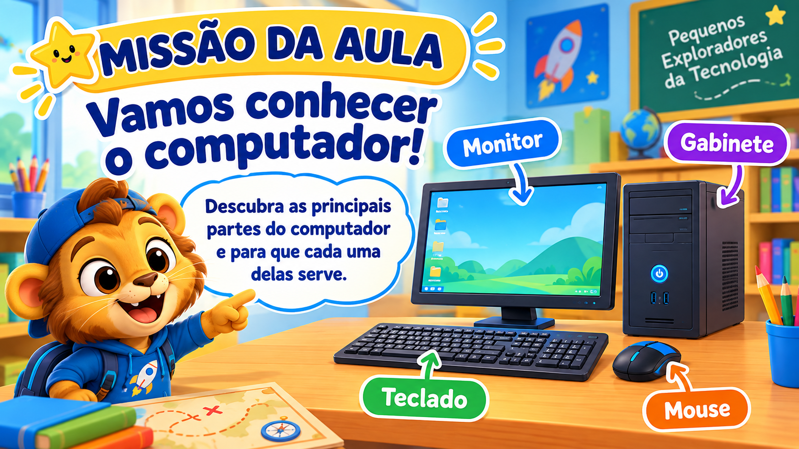
O computador é uma máquina muito inteligente que ajuda as pessoas em várias tarefas do dia a dia.
Com ele podemos:
Hoje encontramos computadores em escolas, hospitais, empresas, bancos, supermercados e em muitos outros lugares.
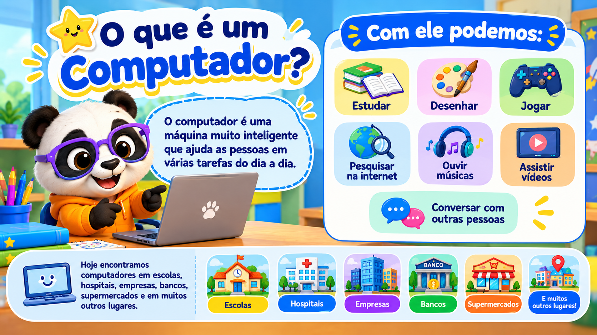
Responda com suas palavras.
Você já usou um computador?
O que você mais gosta de fazer no computador?
Imagine que o computador é uma equipe de super-heróis.
Cada peça tem um trabalho importante. Quando todas trabalham juntas, o computador funciona corretamente.
As quatro peças principais são:
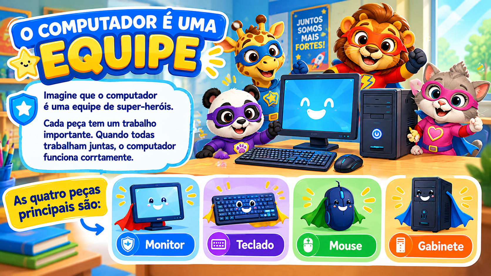
Agora vamos conhecer cada uma delas separadamente.
O monitor é a tela do computador. É nele que vemos jogos, vídeos, desenhos, fotos e tudo o que acontece no computador.
Quando você abre um programa, ele aparece no monitor.

Olhe para um computador e responda:
O que aparece no monitor?
O teclado serve para escrever letras, números e símbolos.
É com ele que digitamos nosso nome, fazemos pesquisas e escrevemos textos.

Escreva abaixo o seu nome completo.
Agora conte quantas letras tem o seu nome.
O mouse ajuda a mover a setinha (cursor) na tela do computador.
Com ele podemos clicar, abrir programas, fechar janelas e desenhar.

Treine os movimentos do mouse.
O que foi mais fácil para você?
O gabinete é uma das partes mais importantes do computador.
Dentro dele ficam peças que fazem o computador funcionar, como o processador, a memória e o armazenamento.
Podemos dizer que o gabinete é o cérebro do computador.

Complete a frase:
O gabinete é importante porque ________________________________________
Agora observe novamente as quatro peças principais do computador.
Ligue cada peça à sua função.
Monitor →
Teclado →
Mouse →
Gabinete →
Agora é hora de explorar um computador de verdade!
Procure as peças abaixo e marque um ✔ quando encontrá-las.
Qual peça você encontrou primeiro?
Escreva o nome correto de cada peça do computador.
🖥️ ________________________________
⌨️ ________________________________
🖱️ ________________________________
💻 ________________________________
🎤 ________________________________
📷 ________________________________
🔊 ________________________________
Vamos ver se você já se tornou um explorador do computador!
1. Qual peça mostra as imagens do computador?
2. Qual peça usamos para escrever?
3. Qual peça usamos para clicar?
4. Qual peça é chamada de cérebro do computador?
5. Qual peça usamos para gravar nossa voz?
Pegue uma folha de papel e desenhe um computador completo.
Seu desenho deve ter:
Depois escreva abaixo quais peças você desenhou.
Você sabia que os computadores podem realizar milhões de operações em poucos segundos?
Existem computadores muito pequenos, como tablets e notebooks, e computadores enormes utilizados por cientistas e pesquisadores.
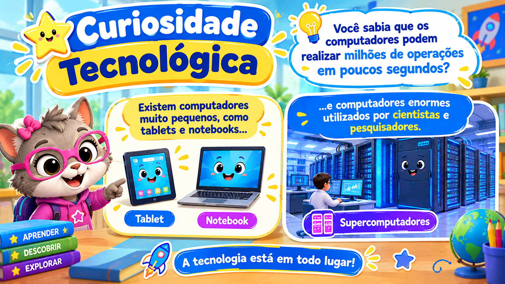
Se você pudesse inventar um computador mágico, o que ele faria?
Descreva sua ideia.
Agora você deverá mostrar tudo o que aprendeu.
Observe um computador e faça as seguintes tarefas:
Escreva abaixo o que você aprendeu nesta missão.
Parabéns! Você concluiu a sua primeira missão.
Agora você já conhece as principais partes do computador e sabe para que cada uma delas serve.
⭐⭐⭐⭐⭐
🎉 Missão 1 concluída com sucesso! Prepare-se para a próxima aventura: aprender a usar o mouse como um verdadeiro piloto da tecnologia.
Parabéns, pequeno explorador! 🌟
Na missão anterior você conheceu o computador. Agora chegou a hora de aprender a controlar uma das ferramentas mais importantes: o mouse.
Ao final desta missão você conseguirá mover o ponteiro, clicar, dar duplo clique, usar a rodinha e arrastar objetos pela tela.

O mouse é o equipamento que controla a setinha (ponteiro) que aparece na tela do computador.
Com ele podemos abrir programas, desenhar, jogar, navegar na internet e mover objetos.
Existem mouses com fio, sem fio e até modelos especiais para jogos e desenhos.
Você já utilizava o mouse antes desta aula?
O que você acha mais divertido fazer com o mouse?
O mouse possui três partes principais.

Cada botão possui uma função diferente e todos são importantes.
O botão esquerdo serve para ________________________________________
O botão direito serve para ________________________________________
A rodinha do mouse serve para ________________________________________
Quando você move o mouse, a setinha da tela também se move.
Ela recebe o nome de ponteiro ou cursor.
O objetivo é aprender a controlar essa setinha com precisão.

O clique simples acontece quando pressionamos o botão esquerdo do mouse apenas uma vez.
Ele serve para selecionar arquivos, botões e programas.

Tente fazer:
Foi fácil ou difícil?
O duplo clique acontece quando clicamos duas vezes rapidamente no botão esquerdo.
Ele é utilizado para abrir programas, pastas e arquivos.

Complete as tarefas:
Qual tarefa foi a mais fácil?
O botão direito mostra um menu com várias opções.
Ele é muito útil para copiar, colar, renomear arquivos e acessar funções do computador.

Clique com o botão direito em:
O que apareceu na tela?
Arrastar significa clicar, segurar o botão esquerdo e mover o mouse.
Essa função é usada para mover arquivos, desenhos e objetos.

Tente mover um ícone para outro lugar da tela.
Depois responda:
Você conseguiu arrastar o objeto corretamente?
A rodinha do mouse faz a página subir e descer.
Ela é muito utilizada para ler textos longos, navegar em sites e visualizar documentos.

Abra uma página da internet e utilize a rodinha para:
O que aconteceu quando você girou a rodinha?
Escreva para que serve cada função do mouse.
Clique simples →
Duplo clique →
Botão direito →
Arrastar →
Rodinha →
Agora você vai mostrar tudo o que aprendeu utilizando o mouse.
Complete as missões abaixo.

Qual atividade você conseguiu fazer com mais facilidade?
Utilizando apenas o mouse, crie um desenho livre no Paint.
Seu desenho pode ter:

Como ficou o seu desenho?
O professor dirá uma peça ou programa, e você deverá chegar até ele usando apenas o mouse.
Complete a corrida.
Você conseguiu completar a corrida?
Responda as perguntas.
1. Qual botão usamos para abrir programas?
2. O que é um duplo clique?
3. Qual botão mostra um menu com opções?
4. Para que serve a rodinha do mouse?
5. O que significa arrastar um objeto?
Você sabia que o primeiro mouse foi criado há muitos anos e tinha apenas um botão?
Hoje existem mouses para jogos, desenhos, computadores e notebooks.
Alguns modelos funcionam sem fio e conseguem se conectar por Bluetooth.

Qual atividade foi a mais divertida?
Qual foi a mais difícil?
O que você aprendeu nesta missão?
Agora chegou o momento de provar que você dominou o mouse.
Você deverá:
Escreva abaixo como você se sentiu ao completar a missão.
Parabéns! Você concluiu a Missão 2.
Agora você já sabe utilizar o mouse para clicar, abrir programas, arrastar objetos e desenhar.
⭐⭐⭐⭐⭐
🎉 Missão 2 concluída com sucesso! Na próxima missão você aprenderá a utilizar o teclado como um verdadeiro digitador da tecnologia.
Parabéns, pequeno explorador! 🌟
Você já conhece o computador e aprendeu a controlar o mouse. Agora chegou o momento de aprender a escrever usando o teclado.
Ao final desta missão você conseguirá localizar letras, números e algumas teclas especiais com muito mais rapidez.

O teclado é um equipamento utilizado para escrever palavras, frases, números e comandos no computador.
Com ele podemos conversar, pesquisar, estudar, escrever histórias e criar documentos.
Cada tecla possui uma função especial e, quanto mais praticamos, mais rápido conseguimos digitar.

Você já digitou seu nome sozinho no computador?
O que você acha mais fácil: usar o mouse ou o teclado?
O teclado possui todas as letras do alfabeto, de A até Z.
Essas letras são utilizadas para escrever nomes, palavras e frases.

Observe com atenção onde ficam as letras.
Encontre rapidamente as seguintes letras no teclado.
Marque um ✔ quando localizar cada letra.
Na parte superior do teclado encontramos os números de 0 até 9.
Eles servem para escrever idades, datas, preços, telefones e muitas outras informações.

Pratique digitando os números abaixo.
1 2 3 4 5
6 7 8 9 0
Agora digite sua idade.
Digite seu nome completo utilizando o teclado.
Quantas letras tem o seu nome?
A tecla Enter serve para pular para outra linha, confirmar uma ação ou enviar uma mensagem.
Ela é uma das teclas mais utilizadas do teclado.

Digite seu nome e pressione Enter.
Depois digite o nome de um amigo em outra linha.
A barra de espaço é a tecla mais comprida do teclado.
Ela serve para separar as palavras quando escrevemos.

Digite a frase abaixo exatamente como está escrita.
Conseguiu separar todas as palavras corretamente?
A tecla Backspace serve para apagar letras e números.
Quando erramos uma palavra, podemos usar essa tecla para corrigir.

Digite a palavra abaixo com um erro e depois corrija usando o Backspace.
Escreva a palavra corretamente.
A tecla Shift ajuda a escrever letras maiúsculas e alguns símbolos.
Ela deve ser pressionada junto com outra tecla.

Digite as palavras abaixo utilizando letras maiúsculas.
A tecla Caps Lock mantém as letras maiúsculas ativadas.
Quando ela está ligada, todas as letras aparecem em maiúsculo.

Ligue o Caps Lock e digite:
Depois desligue o Caps Lock e digite novamente a frase normalmente.
Ligue cada tecla à sua função.
Enter →
Barra de Espaço →
Backspace →
Shift →
Caps Lock →
Digite o mais rápido possível:
Qual palavra foi mais fácil de digitar?
Agora você vai utilizar tudo o que aprendeu sobre o teclado.
Complete as tarefas abaixo utilizando o computador.
Qual atividade foi mais fácil?
Digite as palavras abaixo sem olhar para o teclado por alguns segundos.
Quantas palavras você conseguiu digitar corretamente?
Agora escreva as frases abaixo utilizando letras maiúsculas, espaços e pontuação.
Meu nome é ____________________________.
Eu gosto de informática.
Hoje aprendi a usar o teclado.
Escreva uma pequena história utilizando o teclado.
Você pode contar um passeio, uma brincadeira, um sonho ou inventar uma aventura.

Use sua imaginação para terminar a frase.
Um computador acordou de manhã e resolveu...
Responda as perguntas.
1. Qual tecla pula para outra linha?
2. Qual tecla apaga letras?
3. Qual tecla deixa as letras maiúsculas?
4. Qual tecla separa as palavras?
5. Para que serve o teclado?
Você sabia que existem pessoas que conseguem digitar mais de 100 palavras por minuto?
Quanto mais você pratica, mais rápido e mais correto consegue escrever.

Durante 1 minuto, digite o máximo de palavras que conseguir.
Depois escreva abaixo o seu resultado.
Você acha que conseguirá melhorar esse recorde na próxima aula?
Agora chegou o momento de provar que você domina o teclado.
Escreva um pequeno texto contando um dia divertido da sua vida.
Seu texto deve ter:
Parabéns! Você concluiu a Missão 3.
Agora você já sabe localizar letras, números e utilizar as principais teclas do teclado.
⭐⭐⭐⭐⭐
🎉 Missão 3 concluída com sucesso! Na próxima missão você aprenderá a criar desenhos incríveis no Paint e se tornar um verdadeiro artista digital.
Parabéns, pequeno artista digital! 🖌️
Hoje você vai aprender a usar o Paint, um programa de desenho muito divertido que permite criar pinturas, formas, personagens e paisagens utilizando o computador.
Ao final desta missão você será capaz de criar uma arte digital completa e salvar seu desenho como um verdadeiro artista.

O Paint é um programa de desenho que já vem instalado em muitos computadores com Windows.
Com ele podemos desenhar, colorir, escrever textos e criar imagens usando apenas o mouse.
É um ótimo programa para quem está começando a explorar o mundo da arte digital.
Você já usou o Paint antes?
O que você mais gosta de desenhar?
Para começar a desenhar:
Quando o Paint abrir, aparecerá uma tela em branco. Esse será o seu espaço de criação.

Abra o Paint e faça estas tarefas.
Conseguiu encontrar todas as ferramentas?
O Paint possui várias ferramentas que ajudam a criar desenhos incríveis.
Cada ferramenta tem uma função especial e você aprenderá a utilizá-las como um verdadeiro artista digital.

O lápis serve para fazer desenhos livres, como se você estivesse desenhando em uma folha de papel.
Com ele você pode criar linhas, letras e pequenos detalhes.

Abra o Paint e desenhe:
Qual desenho ficou mais bonito?
O balde de tinta serve para pintar uma área fechada do desenho.
Basta escolher uma cor e clicar dentro da figura.

Pinte as figuras com as seguintes cores.
Qual cor você mais gostou de usar?
O Paint possui ferramentas para criar formas geométricas perfeitas.

Crie um desenho utilizando apenas formas geométricas.
Seu desenho deve conter:
O que você conseguiu criar?
A ferramenta Texto permite escrever palavras e frases dentro do desenho.
Você pode escolher o tamanho da letra, a cor e o tipo da fonte.

Escreva no Paint:
Qual palavra foi mais fácil de escrever?
Agora vamos juntar tudo o que aprendemos.
Desenhe uma casa utilizando:

Como ficou sua casa?
Agora chegou o momento de utilizar todas as ferramentas do Paint.
Crie um desenho completo contendo:

Qual parte do desenho você mais gostou?
Agora desenhe o seu animal favorito utilizando o Paint.
Use diferentes cores e formas para deixar o desenho bem bonito.

Qual animal você desenhou?
Qual cor você mais utilizou?
Vamos inventar um personagem totalmente novo.
Desenhe um personagem utilizando sua imaginação.

Nome do personagem:
Qual é o poder dele?
Onde ele mora?
Qual aventura ele vive?
Você sabia que muitos ilustradores, designers e criadores de jogos começaram desenhando em programas simples como o Paint?
Todo grande artista começou praticando os desenhos mais básicos.

Marque tudo o que você conseguiu fazer.
Agora você será um verdadeiro artista digital.
Crie uma cena completa utilizando tudo o que aprendeu.
Seu desenho deverá conter:

Como ficou o seu desenho?
O que você aprendeu nesta missão?
Parabéns! Você concluiu a Missão 4.
Agora você já sabe desenhar, colorir, utilizar formas geométricas e criar personagens utilizando o Paint.
⭐⭐⭐⭐⭐
🎉 Missão 4 concluída com sucesso! Na próxima missão você aprenderá a explorar a internet com segurança e descobrir o mundo das pesquisas online.
Parabéns, pequeno explorador digital! 🚀
Hoje você vai descobrir um dos lugares mais incríveis da tecnologia: a internet.
Nesta missão você aprenderá a pesquisar, descobrir curiosidades e navegar com segurança.
Ao final da aula você será um verdadeiro Detetive da Internet.

A internet é uma enorme rede que conecta computadores, celulares, tablets e outros equipamentos do mundo inteiro.
Ela permite que pessoas compartilhem informações, assistam vídeos, conversem, estudem e descubram coisas novas.
É como uma gigantesca biblioteca cheia de informações.
Você já usou a internet para assistir vídeos ou jogar?
O que você mais gosta de fazer na internet?
Na internet podemos aprender muitas coisas interessantes.

Marque as atividades que você já fez.
Qual dessas atividades você mais gosta?
Para acessar a internet usamos um programa chamado navegador.
Alguns navegadores conhecidos são:
No navegador existe uma barra onde digitamos o que queremos pesquisar.

Quando queremos descobrir alguma coisa, escrevemos uma pergunta ou um tema na barra de pesquisa.
Quanto mais clara for a pesquisa, melhores serão os resultados.

Veja alguns exemplos de pesquisas.
Escolha um assunto que você gosta e escreva como faria a pesquisa.
O que você gostaria de descobrir?
Pesquisas bem feitas ajudam a encontrar respostas mais rapidamente.
Observe a diferença.
Pesquisa simples:
Dinossauros
Pesquisa melhor:
Qual foi o maior dinossauro que já existiu?
Transforme o tema abaixo em uma pergunta.
Tema: Espaço
Tema: Animais
Tema: Futebol
A internet é um lugar cheio de informações, mas precisamos navegar com cuidado.
Existem algumas regras muito importantes.

Escreva SEGURO ou NÃO SEGURO.
Compartilhar minha senha.
Pedir ajuda ao professor.
Acessar um site educativo.
Conversar com um desconhecido na internet.
Pesquisar sobre animais.
Um bom detetive sempre verifica se a informação parece verdadeira.
Quando encontrar algo muito estranho, faça estas perguntas.

Pesquise um animal que você gosta e descubra:
Agora você será um verdadeiro explorador da internet.
Abra o navegador e faça uma pesquisa sobre um assunto que você gosta.
Escolha um destes temas ou invente outro.
Qual tema você escolheu?
O que você descobriu?
Pesquise as respostas para estas perguntas.
Escreva uma curiosidade que você encontrou.
Conte a curiosidade mais interessante que você encontrou na internet.

Escolha um país e descubra três informações sobre ele.
País escolhido:
Capital:
Uma comida típica:
Uma curiosidade interessante:
Com a internet podemos aprender:
Quando usamos a internet para aprender, ela se torna uma grande amiga do conhecimento.
Marque tudo o que você conseguiu fazer.
Agora faça uma pesquisa completa sobre o assunto que você mais gosta.
Depois escreva:
Meu tema favorito:
Três curiosidades que descobri:
O que mais gostei de aprender nesta missão?
Parabéns! Você concluiu a Missão 5.
Agora você já sabe pesquisar, encontrar informações e navegar na internet com muito mais segurança.
⭐⭐⭐⭐⭐
🎉 Missão 5 concluída com sucesso! Na próxima missão você realizará um grande projeto final e conquistará o título de Pequeno Especialista em Informática.
Parabéns, pequeno explorador! 🌟
Você chegou à última missão do curso. Durante suas aventuras você aprendeu a conhecer o computador, controlar o mouse, utilizar o teclado, desenhar no Paint e navegar com segurança na internet.
Hoje é o grande dia! Você passará por vários desafios para mostrar tudo o que aprendeu e conquistar o título de Pequeno Especialista em Informática.

Vamos lembrar tudo o que você conquistou durante o curso.
Você aprendeu as principais partes do computador e descobriu para que cada uma delas serve.
Você aprendeu a clicar, abrir programas, arrastar objetos e utilizar a rodinha do mouse.
Você aprendeu letras, números e teclas especiais como Enter, Espaço e Backspace.
Você criou desenhos, utilizou formas, cores e desenvolveu sua criatividade no Paint.
Você aprendeu a pesquisar, descobrir curiosidades e navegar com segurança.
Qual missão você mais gostou?
O que você aprendeu nela?
Responda as perguntas.
1. Qual peça mostra as imagens do computador?
2. Qual peça usamos para escrever?
3. Para que serve o mouse?
4. Qual programa utilizamos para desenhar?
5. Podemos compartilhar nossa senha com desconhecidos?
6. O que faz a tecla Enter?
Escreva uma habilidade nova que você aprendeu durante o curso.
Agora desenhe uma estrela ao lado do seu nome para comemorar sua evolução!
Agora você passará por quatro estações especiais.
Em cada estação você deverá realizar uma missão para conquistar uma estrela.
Ao completar todas as estações, você estará preparado para o grande desafio final.
Complete as tarefas abaixo.
Você conseguiu completar a missão do mouse?
Digite corretamente as frases abaixo.
Meu nome é __________________________________
Eu gosto de aprender informática.
Hoje concluí meu curso de Informática Kids.
Foi fácil digitar? O que você achou mais divertido?
Abra o Paint e crie um desenho contendo:
Qual parte do desenho ficou mais bonita?
Pesquise um assunto que você gosta.
Meu tema escolhido foi:
Escreva três curiosidades que você descobriu.
Pinte uma estrela para cada estação concluída.
Quantas estrelas você conquistou?
Parabéns! Você está cada vez mais perto de se tornar um Pequeno Especialista em Informática. 🚀
Agora você realizará uma missão completa utilizando tudo o que aprendeu durante o curso.
Complete as tarefas sem ajuda.

Qual tarefa foi mais fácil?
Agora você criará uma pequena apresentação sobre você.
Escreva as informações abaixo.
Meu nome:
Minha idade:
Meu animal favorito:
Meu desenho favorito:
O que mais gostei de aprender durante o curso:
O que quero aprender no futuro:
Escreva uma mensagem contando como foi participar do curso.
Marque tudo o que você aprendeu.
Agora chegou o momento de provar tudo o que você aprendeu.
Você deverá:

Como você se sentiu ao concluir todas as missões?
🎉 Parabéns, pequeno explorador!
Você concluiu todas as 6 missões do Curso de Informática Kids.
Durante essa aventura você aprendeu a utilizar o computador com mais segurança, criatividade e confiança.

🏆 TÍTULO CONQUISTADO
⭐⭐⭐⭐⭐
Você aprendeu sobre computadores, mouse, teclado, Paint e internet. Agora está preparado para continuar explorando o mundo da tecnologia!
Desenhe uma grande estrela e escreva dentro dela o seu nome.
Essa estrela representa tudo o que você conquistou durante o curso.
👏 Continue estudando, criando, explorando e nunca deixe de aprender coisas novas!
Neste workshop você aprenderá a utilizar o Canva desde os primeiros passos até a criação de artes profissionais para redes sociais, empresas, escolas e projetos pessoais.
Mesmo que você nunca tenha utilizado a plataforma, ao final desta aula será capaz de criar materiais modernos utilizando modelos prontos, imagens, textos, elementos gráficos e recursos de Inteligência Artificial.
O objetivo não é apenas aprender onde ficam as ferramentas, mas entender como criar projetos bonitos e organizados.
O Canva é uma plataforma de Design Gráfico online criada para facilitar a criação de artes profissionais mesmo para quem nunca estudou design.
Com poucos cliques é possível produzir posts para Instagram, apresentações, currículos, cartazes, banners, logotipos, vídeos, certificados e muito mais.
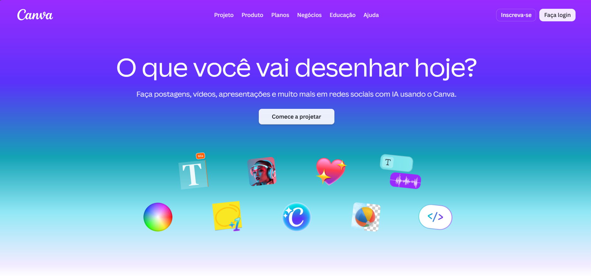
Tela inicial da plataforma Canva.
Hoje milhões de pessoas utilizam o Canva diariamente para trabalhar, estudar e empreender.
O Canva foi lançado em 2013 na Austrália por Melanie Perkins, Cliff Obrecht e Cameron Adams.
Antes dele, criar uma arte exigia programas complexos como Photoshop e Illustrator.
O Canva revolucionou esse mercado permitindo que qualquer pessoa criasse materiais profissionais através de modelos prontos.
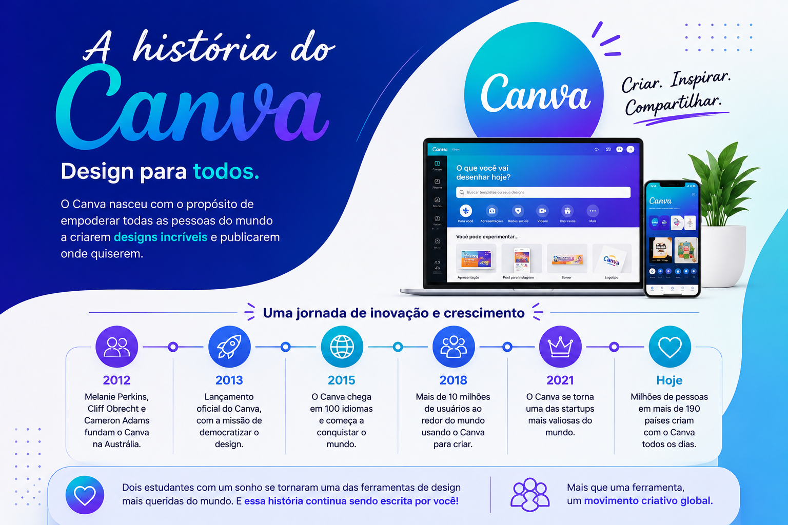
Responda:
Hoje praticamente todas as áreas utilizam o Canva.
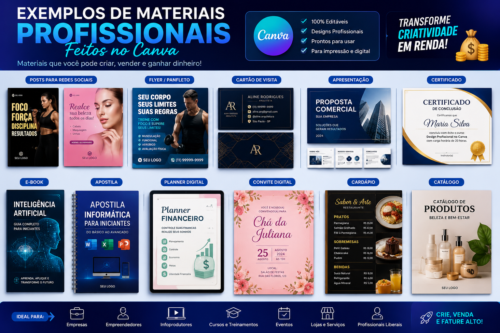
Exemplos de projetos criados no Canva.
Vamos acessar o site do Canva "Clica no Link"
Você poderá criar sua conta utilizando:
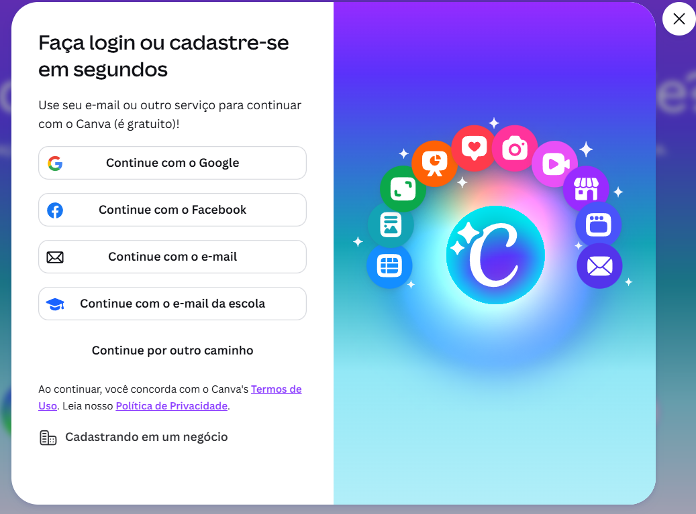
Após realizar o login, você será direcionado para a tela inicial da plataforma.
Crie sua conta e faça login.
Ao entrar no Canva você verá a tela principal.
Nela ficam seus projetos, modelos e sugestões de criação.
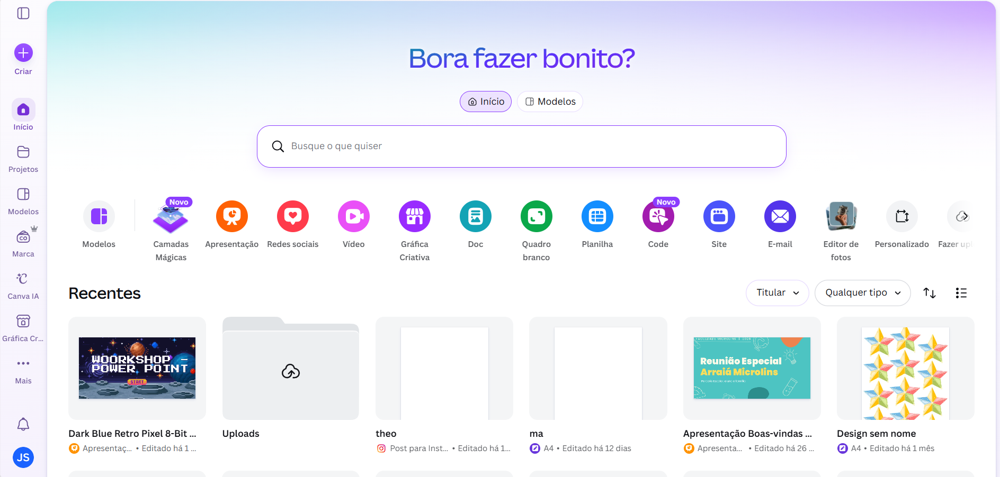
Observe os principais locais:
Explore a página inicial durante alguns minutos.
Localize:
Agora tente explicar com suas próprias palavras:
Por que o Canva se tornou uma das plataformas de design mais utilizadas no mundo?
✅ Fim da Parte 1
Na Parte 2 vamos conhecer toda a interface do Canva e criar nosso primeiro projeto.
Depois de fazer login, clique no botão "Criar um Design". Você poderá escolher diversos formatos de projetos.
O Canva já possui tamanhos prontos para praticamente qualquer tipo de material.
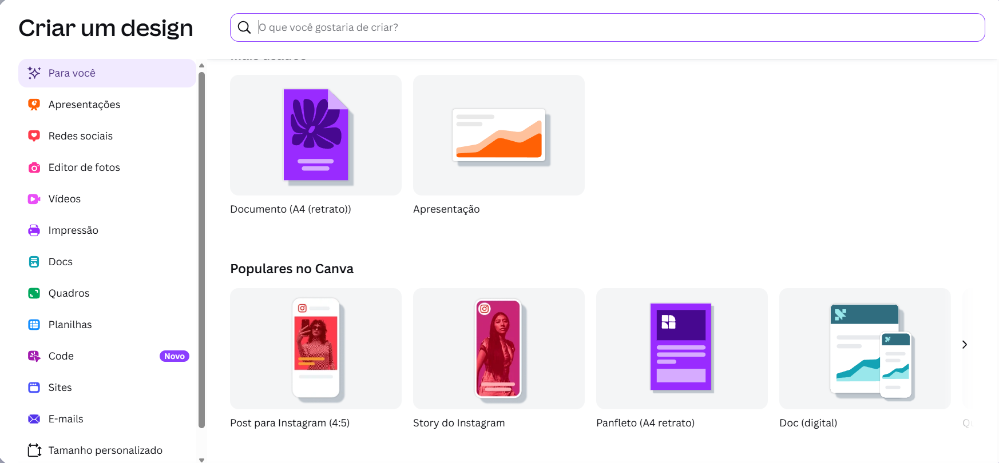
Botão Criar um Design.
Abra o menu "Criar um Design" e observe quantos formatos existem.
Vamos utilizar um dos formatos mais populares do Canva.
Clique em Post para Instagram (1080 x 1080).
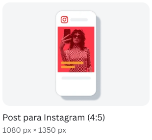
Será aberta uma página em branco pronta para edição.
Crie seu primeiro projeto.
A tela de edição é onde todo o trabalho acontece.
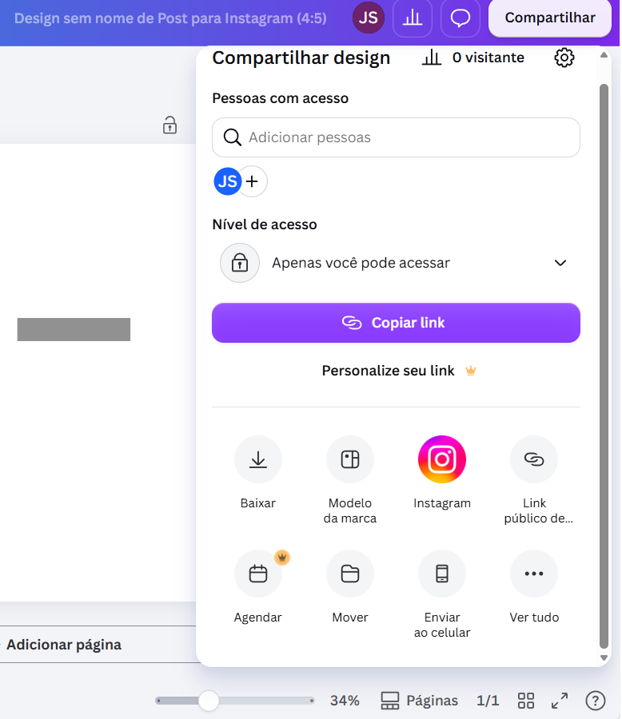
Observe os principais locais:
Localize na tela:
O menu lateral concentra praticamente todas as ferramentas do Canva.
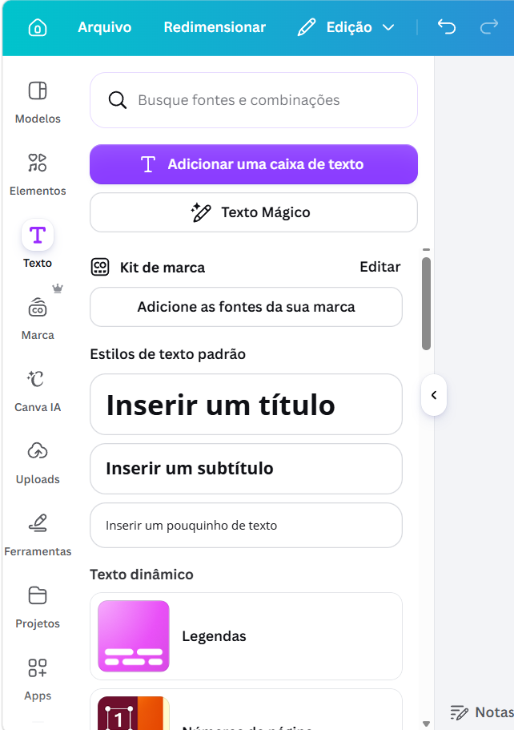
Entre elas:
Abra cada uma das opções do menu lateral.
Os modelos são artes prontas que podem ser totalmente personalizadas.
Você pode trocar textos, imagens, cores, fontes e praticamente qualquer elemento.
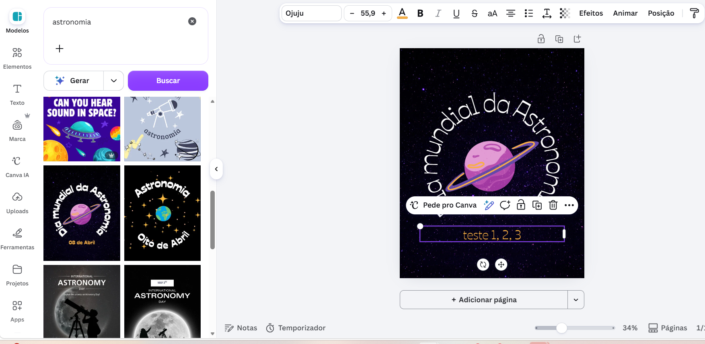
Escolha um modelo pronto e aplique ao seu projeto.
Na aba Elementos encontramos milhares de recursos gráficos.
Pesquise e adicione:
Sem ajuda do professor, tente criar um Post para Instagram utilizando:
✅ Fim da Parte 2
Na Parte 3 aprenderemos a trabalhar com textos, imagens, uploads e recursos de Inteligência Artificial do Canva.
Uma boa arte começa com um bom título. O Canva possui centenas de fontes e estilos para destacar suas informações.
Clique na opção Texto no menu lateral para adicionar títulos, subtítulos e textos comuns.
Você pode alterar:
Adicione um título ao seu projeto.
As cores chamam a atenção do público e ajudam a transmitir emoções.
Alguns exemplos:
Troque a cor do fundo e do texto.
Na aba Fotos você encontrará milhares de imagens gratuitas.
Basta pesquisar uma palavra.
Exemplos:
Pesquise uma imagem relacionada ao seu projeto.
Você também pode utilizar suas próprias imagens.
Clique em Uploads → Enviar Arquivos.
Você poderá enviar:
Envie uma imagem do seu computador para o Canva.
O Canva possui diversas ferramentas inteligentes que ajudam na criação dos projetos.
Entre elas:
O Magic Design cria automaticamente sugestões de layouts profissionais com base em um tema ou imagem.
Experimente gerar um modelo utilizando o Magic Design.
O Magic Write utiliza Inteligência Artificial para criar textos automaticamente.
Você informa o assunto e a IA gera uma sugestão.
Peça ao Magic Write para criar um pequeno texto.
Após finalizar sua arte, clique em Compartilhar.
Você pode:
Depois do projeto pronto, clique em Download.
Formatos disponíveis:
Faça o download do seu projeto em PNG.
Agora crie uma arte completa contendo:
Parabéns!🏅
Você concluiu o Workshop Canva – Transformando suas Ideias em Projetos.
Agora você já conhece os principais recursos da plataforma e está preparado para criar materiais para estudos, trabalho, redes sociais e projetos pessoais.
👏 Continue praticando. Quanto mais projetos você criar, melhores serão seus resultados!